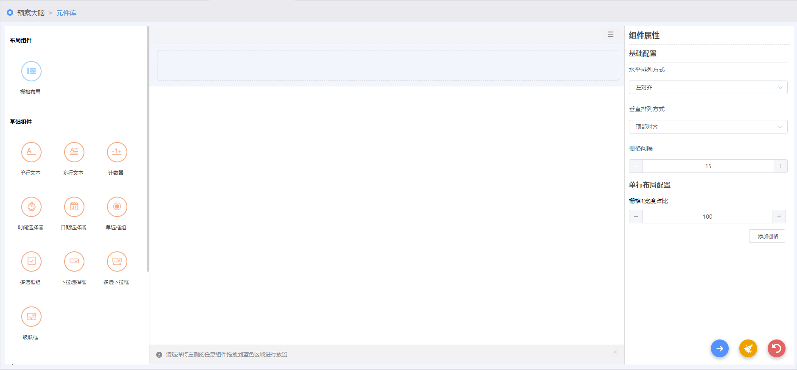

空白创建元件
| 1. | 在“选择元件添加方式”窗口，单击〖空白创建〗按钮，进入添加页面。如Fig 1所示。 Fig 1 组件添加页面

组件添加页面划分为三个区域，其中，左侧为组件列表区，包括：布局组件、基础组件、高级组件；中间为：内容编辑区；右侧为：组件属性设置区。
|
| 2. | 添加布局组件。选择布局组件，拖至元件编辑区，页面默认存在一个布局组件。 |
| 3. | 添加内容组件。选择组件（基础组件或高级组件），拖至编辑区布局组件所在区域 |
| 4. | 单击内容编辑区按钮，进行元件内容布局设置。包括：设置标签对齐方式以及组件尺寸。 |
| 5. | 填写组件属性 组件属性位于页面右侧，包含：基础配置、单行布局配置（仅布局组件需要设置）、操作配置、数据源配置、数据联动加载配置、数据校验配置等。不同类型的组件，需要设置的组件属性不同。
|
| 6. | 单击按钮，进入下一步操作。
|
| 7. | 填写元件基本信息。
|
| 8. | 填写元件结构及内容。 |
| 9. | 单击按钮，完成元件添加操作。 |
| • | 因页面中间默认存在一个布局组件，可直接将任意组合的基础组件、高级组件拖拽至该布局组件区域中。若要再次添加组件，则需要先添加布局组件，才可以进行添加组件操作。 |
| • | “元件基本信息”区域的“事件类型”、“元件类型”下拉框中的数据来源于“预案大脑→支撑数据管理”中定义的事件分类、元件类型。具体请参见 支撑数据管理。 |
| • | 组件属性下的“数据源配置”区域，若数据源为“选择已有数据源”，则该下拉框中的选项来源于“预案大脑→数据源管理”中定义的数据源（仅普通表格组件的已有数据源下拉框中的选项来源于“预案大脑→规则库”中定义的规则），对应的数据选项为选择的已有数据源数据；若数据源为“自定义远端数据源”，则需要输入远端数据源URL并加载远端数据源数据。 |
| • | 若组件的数据来源于当前元件已有组件，则需要设置“数据联动加载配置”：选中“启动数据加载条件”，选择“前置数据表单项”下的当前元件已有组件，选择“已有规则”下拉框中的规则库中已有规则或选择自定义设置的数据加载条件来加载数据。 |
| • | 若组件的数据需要做数据校验，需要设置“数据校验配置”区域。 |